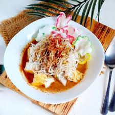

Rumah Makan Tepi Sawah
Makan enak, nggak bikin kantong bengkak

Pemesanan
Isi form pemesanan dengan klik tombol Pesan di bawah
Ketoprak
Diposting pada 14.00 WIB, 06 Oktober 2023

Ketoprak merupakan makanan khas Indonesia yang menggunakan ketupat sebagai bahan utamanya. Biasanya, ketoprak dijajakan menggunakan kereta dorong di jalan-jalan atau kaki lima.Makanan khas ini banyak ditemui di kota Jakarta.
Jadwal Buka
Jadwal Buka
Senin-Sabtu
08.00-22.00 WIB
Berita Terbaru
Khasiat Daging Kambing
Menu Makanan Keluarga
Sejarah Pembuatan Ketoprak
Minuman Pelepas Dahaga
Ayam Geprek Gurih